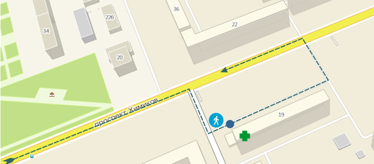
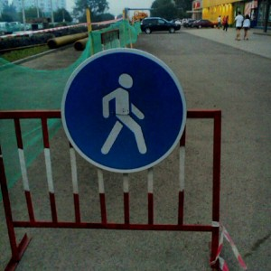

На проспекте Химиков, в районе бывшего «Чердачка», а сейчас там вроде «Пивная академия», есть аптека, в которой низкие цены, разговаривающие фармацевты и у меня скидка по дисконтной карте.
Постоянно за лекарствами езжу туда, вот и сегодня вечером заехал купить витаминов и прочего. Машину оставляю около аптеки, потом проезжаю по стоянке около «Экономьки» и «академии» и, разворачиваясь на Химиков, уезжаю восвояси.

Подъехав к аптеке сегодня, я увидел сначала раскопанный газон (заботливо обтянутый зелёной сеткой) и потом и необычный для города Кемерова знак. Смысл этого знака, к своему стыду, я оперативно вспомнить не смог, но человек изображённый на нём намекал, что ничего хорошего, заехав под этот знак, я не получу (кроме витаминов).

Машину предусмотрительно оставил перед знаком, сходил в аптеку, а вернувшись домой полез википедить.
В общем интуиция меня почти не подвела. Знак 4.5 «Пешеходная дорожка» устанавливается в тех местах, где разрешено движение только пешеходам.
В соответствии со статьёй 12.15. пункта 2 КоАП «Нарушение правил расположения транспортного средства на проезжей части дороги, встречного разъезда или обгона»
«Движение по велосипедным или пешеходным дорожкам либо тротуарам в нарушение Правил дорожного движения влечет наложение административного штрафа в размере двух тысяч рублей.»
Но… признаваться в незнании знаков я бы вряд ли стал, если бы не одно «но».
Кроме Правил дорожного движения я решил почитать ещё и ГОСТ Р 52289-2004 «Технические средства организации дорожного движения. Правила применения дорожных знаков, разметки, светофоров, дорожных ограждений и направляющих устройств.». В ГОСТе уже интереснее:
5.5.8 Знак 4.5 "Пешеходная дорожка" применяют для обозначения дорожек, предназначенных только для движения пешеходов. Основной знак устанавливают в начале пешеходной дорожки справа от нее, повторный — после каждого пересечения с дорогой.
Таким образом действие именно этого знака распространяется только на участок за зелёной сеткой, на котором лежат трубы. Хотя сотрудники ГИБДД, могут легко об этом умолчать в профилактической беседе с незнающим ГОСТов водителем.
Будьте внимательны, уважайте пешеходов, соблюдайте правила, но думайте головой.